Linux(Wubi)
1. 在 Windows 環境安裝 wubi , 並建立個人帳號, 顯示 Ubuntu 9.10 畫面
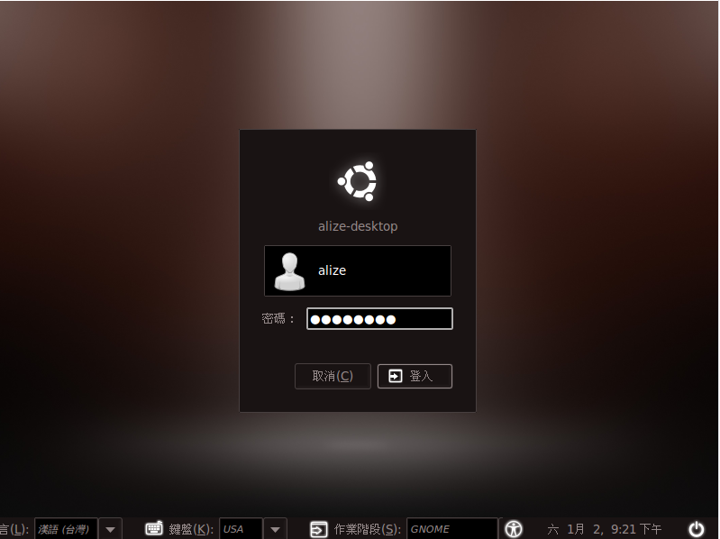
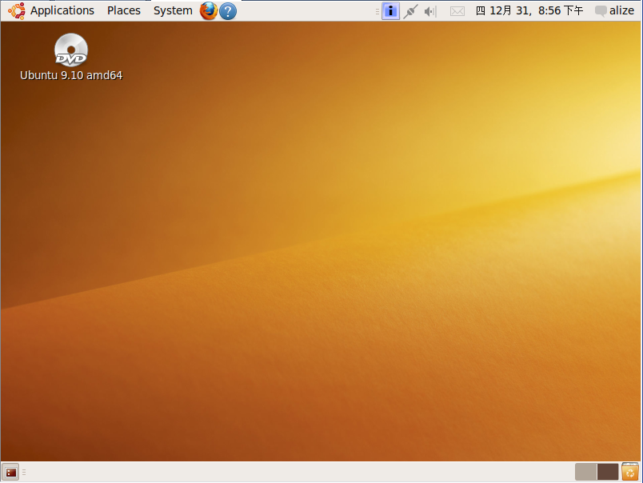
2. 完成系統更新，顯示更新畫面
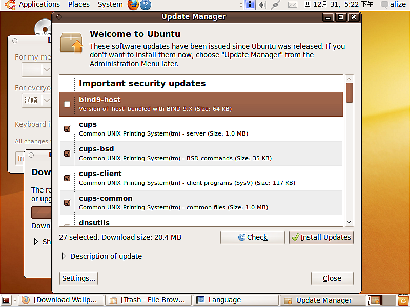
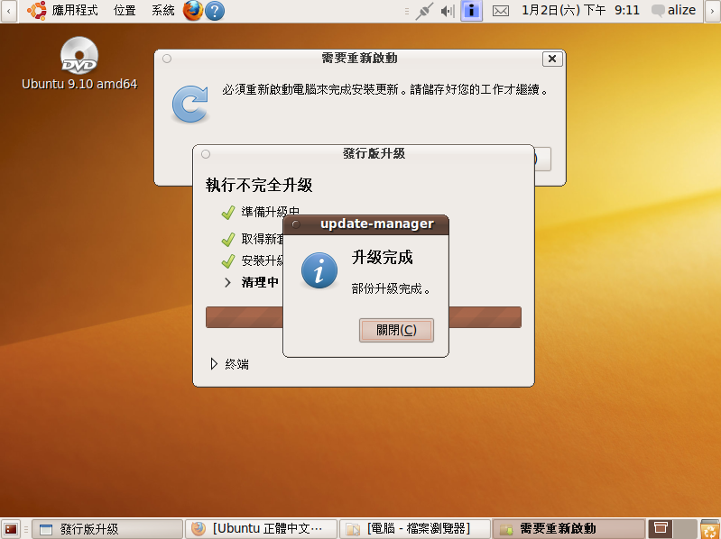
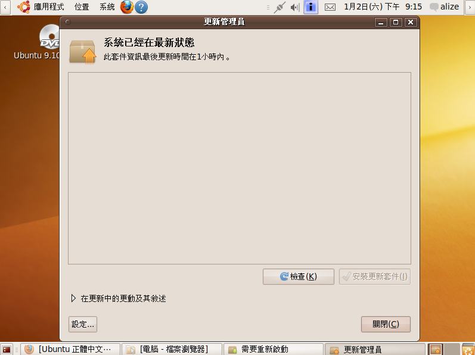
3. 使用 firefox 瀏覽器顯示Yahoo首頁 http://tw.yahoo.com
(自行安裝flash外掛)
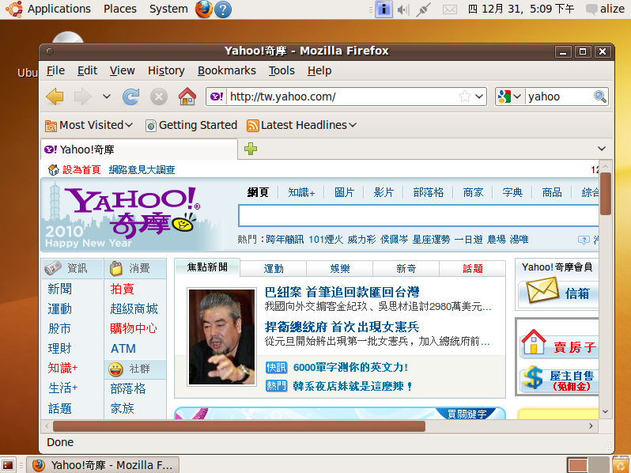
4. 更換桌面背景圖，並在背景圖上秀出
系年班、學號、姓名、座號
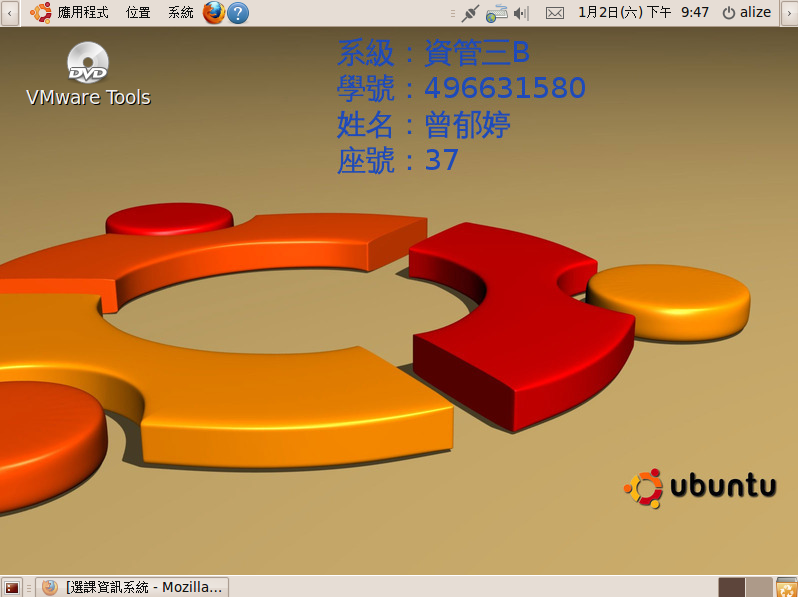
5. 安裝 sshd 並能被遠端連線，使用 putty 連線軟體驗證
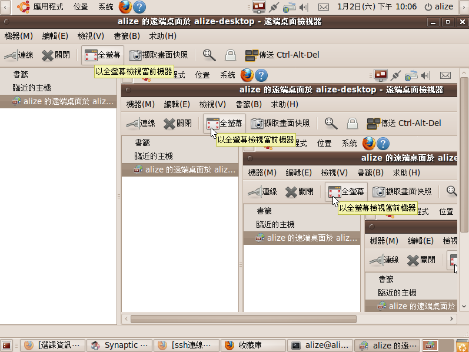
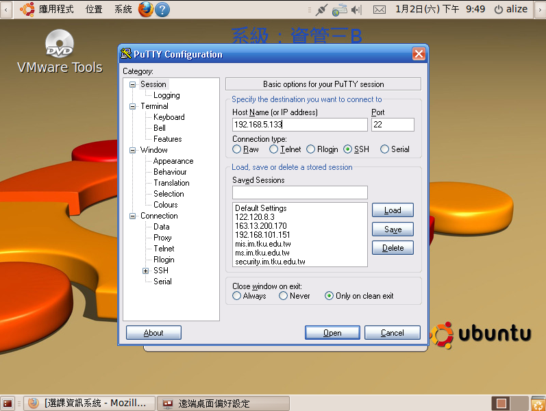
6. 安裝 apache, php5, mysql, phpmyadmin，
使用 firefox 顯示 http://localhost 畫面
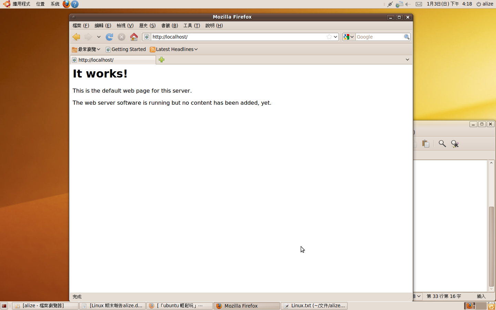
7. 安裝 phpmyadmin 請使用 http://localhost
請使用 firefox 顯示進入 phpmyadmin 後的畫面
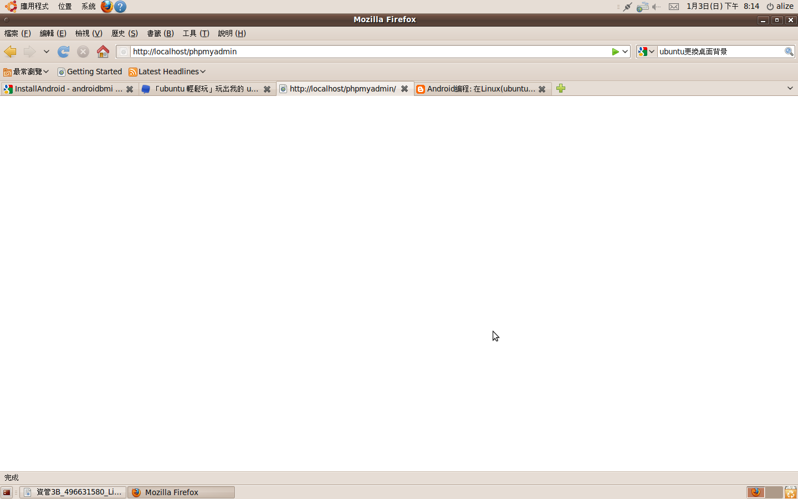
PS：因config檔損毀，呈現出白畫面，正常畫面應為資料庫畫面)
8. 安裝 eclipse , 請顯示進入 eclipse 的畫面
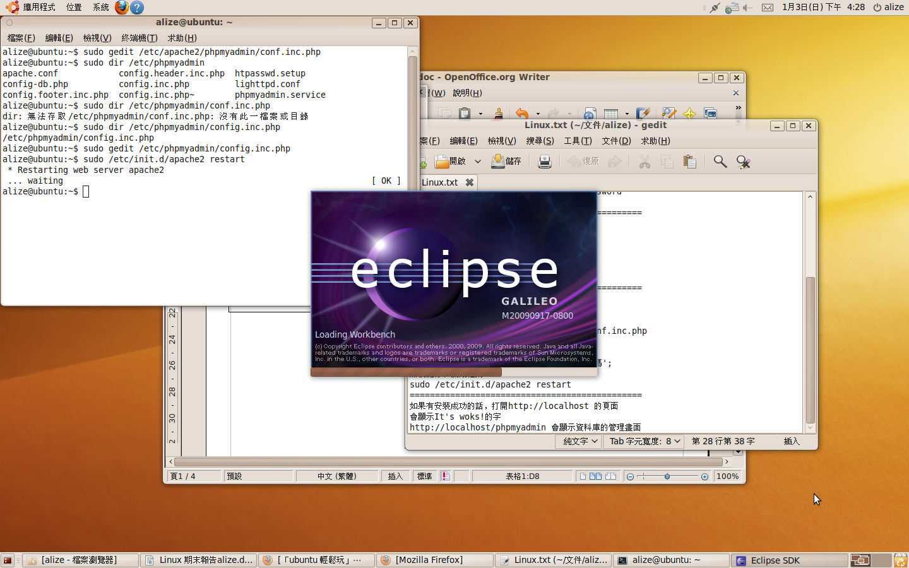
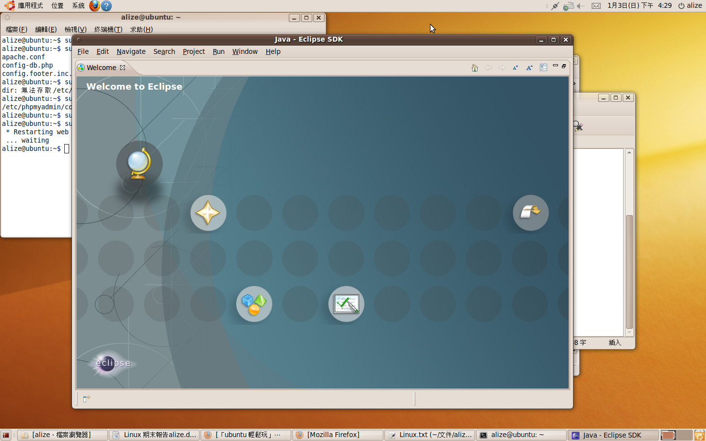
9. 安裝 android develop tool (ADT) for eclipse,
請顯示 android 1.5 版模擬器的畫面
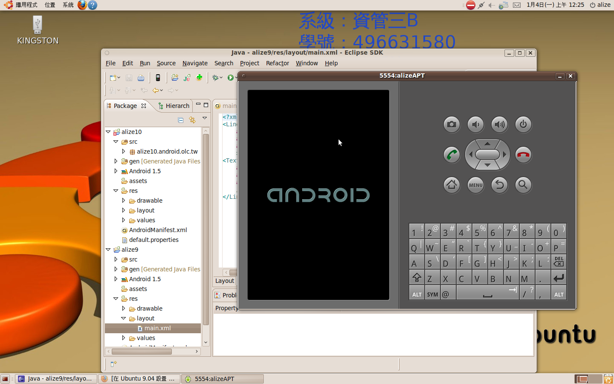
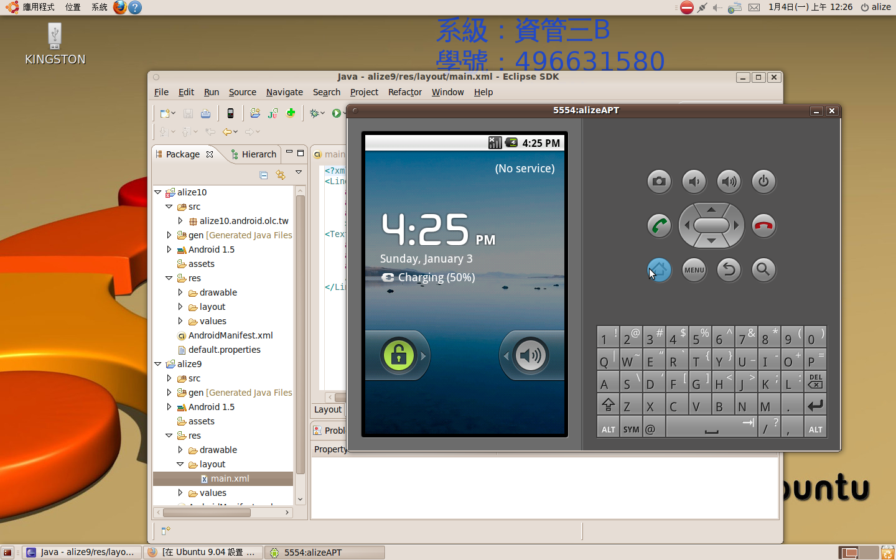
10. 利用 eclipse 的 ADT 環境來執行設計一個 Java 程式
顯示系年班、學號、姓名、座號，並顯示執行畫面與結果
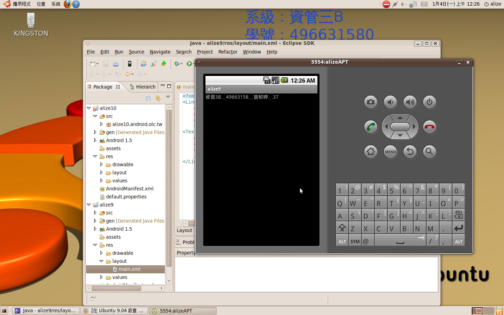
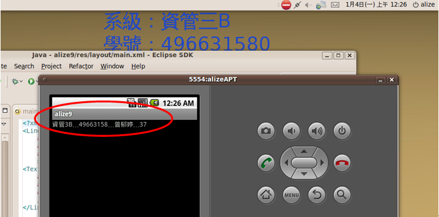